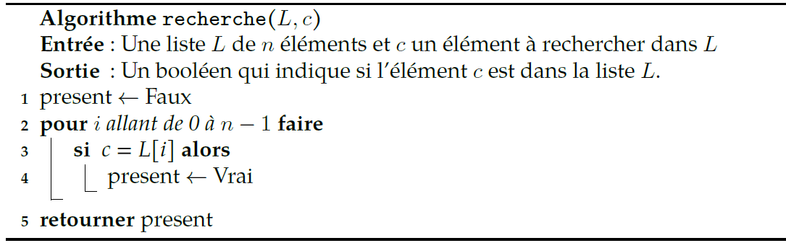
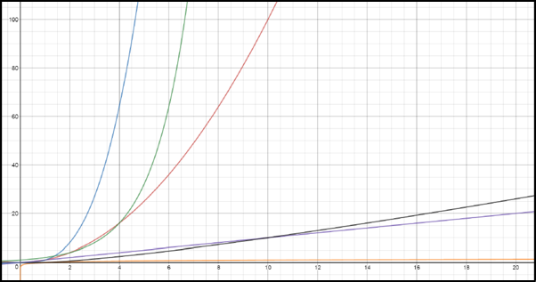
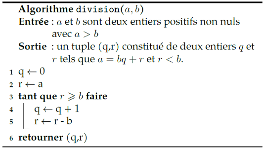
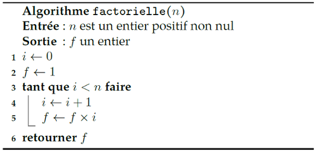
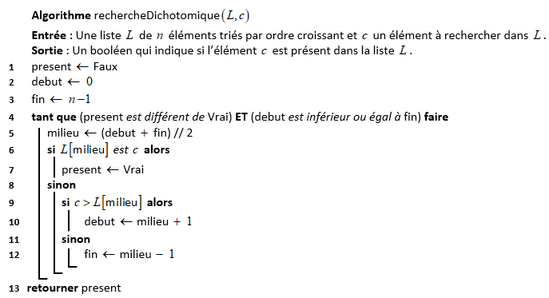

Algorithmes : complexité, terminaison et correction
Introduction
Rappelons avant de commencer ce qu’est un algorithme. Nous dirons que c’est un ensemble de règles permettant de résoudre un problème sur des données d’entrée. Cet ensemble de règles définit avec précision un ensemble de séquences d’opérations qui se terminent en un temps fini. Pour résoudre un problème, il existe plusieurs méthodes menant pour chacune à un algorithme différent.
Exemple : la multiplication de deux entiers naturels \(~m~\) et \(~n~\) écrits en base 10
Voici quelques algorithmes qui permettent cette opération :
- Poser la multiplication comme vue à l’école primaire.
- Utiliser un boulier.
- La méthode dite par "jalousies".
- Tracer \(~m~\) lignes et \(~n~\) colonnes et compter le nombre d’intersections.
Pour chaque algorithme, on peut se poser trois questions fondamentales que nous détaillerons dans ce chapitre :
- La question du coût que l’on peut subdiviser en deux sous-questions :
- Le coût en temps.
- Le coût en espace (mémoire pour l’ordinateur).
- La question de la terminaison, à savoir si un algorithme se termine ou pas. On se posera cette question en particulier pour les boucles non bornées.
- La question de la correction, c’est à dire savoir si l’algorithme résout effectivement le problème de départ.
Nous travaillerons sur ces différentes questions sur des exemples "simples" qu’il faudra maîtriser.
Parcours séquentiel d'une liste
Le problème
On s’intéresse à la recherche d’occurrences sur des valeurs de type quelconque : nombre, booléen, chaine de caractères, liste ... dans une liste.
Nous noterons c l’élément recherché (cible) et la liste dans laquelle nous cherchons c sera notée L.
Voici un algorithme en langage naturel qui résout ce problème :

Exercice 1 ⭐⭐
- Écrire une implémentation en Python de cet algorithme sous la forme d’une fonction nommée
rechercheet la compléter par deux tests. - Intéressons-nous maintenant aux questions évoquées en introduction.
- La terminaison : cet algorithme se finira-t-il en un temps fini ?
- La correction : l’algorithme fait-il ce pourquoi il est conçu ?
En ce qui concerne le coût, il est nécessaire de préciser comment nous allons le calculer.
Tout d’abord, nous nous contenterons du coût en temps (et pas en espace mémoire).
Une première idée est que ce temps va dépendre de la taille des données fournies en entrée. En effet, l’algorithme recherche ne mettra pas le même temps sur une liste de 20 mots que sur l’ensemble du dictionnaire français. Le coût sera donc une fonction de la taille des données. Dans notre exemple, cela sera une fonction de \(~n\) (la taille de la liste).
Ensuite, comme les ordinateurs n’ont pas tous la même vitesse d’exécution (fréquence du processeur, vitesse de la RAM, débit du disque dur ...) il convient d’évaluer le coût en temps d’un algorithme indépendamment de l’architecture de l’ordinateur utilisé. Nous utiliserons un modèle abstrait de machine nommé le modèle RAM.
Définition
Le modèle RAM (Random Access Machine) est un modèle abstrait d’ordinateur où chaque opération simple, qualifiée aussi d'opération primitive, (opération arithmétique, comparaison, affectation, appel de fonction, retour de fonction, accès à un tableau, instruction de contrôle if...) ne demande qu’une seule étape de calcul. On parle alors de temps constant.
Et enfin, nous nous intéresserons exclusivement au temps d’exécution au pire des cas, c’est à dire au temps d’exécution maximal. Par exemple, imaginons un algorithme de recherche qui se termine dès que l’élément est atteint, le temps d’exécution au pire des cas se produira lorsque l’élément recherché sera en dernière position de la liste.
Au final, voici ce que vous devez retenir :
Définition
Le temps d’exécution au pire des cas sera le temps maximal que mettra un algorithme à se terminer quand il reçoit des données de taille \(~n\). Chaque opération élémentaire (voir modèle RAM) demandant une seule étape de calcul.
Remarque
Le temps d’exécution sera une fonction de la variable \(~n\).
Déterminons, ensemble, le temps d’exécution au pire des cas de l’algorithme recherche présenté précédemment :
- Etape 1 : recenser les opérations élémentaires. Dans cet algorithme, on a :
- Affectation d'un booléen (variable
present) - Calcul de la longueur d'une liste (
len(L)) - Itération d'un entier (boucle
for) - Accès à un élément de tableau (
L[i]) - Comparaison de deux réels (
c == L[i]) - Renvoi d'une valeur en fin d'algorithme
- Etape 2 : compter le nombre de fois où chaque opération est effectuée, pour chaque ligne.
| Ligne | Affec. booléen | Calcul longueur | Itération | Accès tableau | Comp. de réels | Renvoi de valeur |
|---|---|---|---|---|---|---|
| 1 | 1 | |||||
| 2 | 1 | \(n\) | ||||
| 3 | \(n\) | \(n\) | ||||
| 4 | \(n\) | |||||
| 5 | 1 | |||||
| Total | \(n+1\) | 1 | \(n\) | \(n\) | \(n\) | 1 |
Ainsi, l'algorithme de recherche d'un élément dans une liste exécute \(~4n+3~\) opérations primitives dans le pire des cas.
Ordre de grandeur de complexité
Pour catégoriser les algorithmes, nous aurons recours à des classes de complexité. Des algorithmes appartenant à une même classe seront alors considérés comme de complexité équivalente. Cela signifiera que l’on considèrera qu’ils ont la même efficacité (cela est approximativement vrai si on regarde les temps d’exécution pour des données de grandes tailles).
Le tableau suivant récapitule les complexités de référence par ordre croissant de temps d’exécution :
| Complexité | Désignation | Exemple d'algorithme |
|---|---|---|
| 1 | complexité constante | accès à une valeur d’une liste |
| \(\operatorname{log_{2}}(n)\) | complexité logarithmique | recherche dichotomique dans une liste triée |
| \(n\) | complexité linéaire | parcours d’une liste |
| \(n\operatorname{log_{2}}(n)\) | complexité quasi-linéaire | tri fusion (le tri de python) |
| \(n^2\) | complexité quadratique | parcours d’une liste de listes (tableau \(n×n\)) |
| \(n^p\) avec \(p>2\) | complexité polynomiale | multiplication de matrices |
| \(2^n\) | complexité exponentielle | problème du sac à dos (algo naïf) |
| \(n!\) | complexité factorielle | problème du voyageur de commerce (algo naïf) |
Pour se fixer les idées, voici un tableau qui donne le temps approximatif d’exécution en fonction de la taille des données.
Nous partirons du principe qu’une instruction élémentaire prend \(~1~\mu{s}\) (\(~10^{-6}~\) secondes).
Un temps astronomique est supérieur à un milliard de milliards d’années.
| Taille \((n)\) | \(\operatorname{log_{2}}(n)\) | \(n\) | \(n\operatorname{log_{2}}(n)\) | \(n^2\) | \(2^n\) | \(n!\) |
|---|---|---|---|---|---|---|
| \(10\) | \(3~\mu{s}\) | \(10~\mu{s}\) | \(30~\mu{s}\) | \(100~\mu{s}\) | \(1000~\mu{s}\) | \(10~\mu{s}\) |
| \(100\) | \(7~\mu{s}\) | \(100~\mu{s}\) | \(700~\mu{s}\) | \(\displaystyle\frac{1}{100}s\) | \(10^{14}~\textup{siècles}\) | \(\operatorname{astronomique}\) |
| \(1000\) | \(10~\mu{s}\) | \(1000~\mu{s}\) | \(\displaystyle\frac{1}{100}s\) | \(1~s\) | \(\operatorname{astronomique}\) | \(\operatorname{astronomique}\) |
| \(10000\) | \(13~\mu{s}\) | \(\displaystyle\frac{1}{100}s\) | \(\displaystyle\frac{1}{7}s\) | \(1,7~min\) | \(\operatorname{astronomique}\) | \(\operatorname{astronomique}\) |
| \(100000\) | \(17~\mu{s}\) | \(\displaystyle\frac{1}{10}s\) | \(2~s\) | \(2,8~h\) | \(\operatorname{astronomique}\) | \(\operatorname{astronomique}\) |
Et voici un graphique donnant les représentations graphiques des fonctions :
Du "bas vers le haut", on a les courbes des fonctions \(~x \mapsto \operatorname{log_{2}}(x)\), \(~x \mapsto x\), \(~x \mapsto x\operatorname{log_{2}}(x)\), \(~x \mapsto x^2\), \(~x \mapsto 2^x\) et \(~x \mapsto x^3\).
La courbe de la fonction \(~x \mapsto x^3~\) ne reste pas longtemps "au-dessus" de celle de la fonction \(~x \mapsto 2^x\) puisque pour \(~x = 10\), \(~10^3=1000~\) tandis que \(~2^{10}=1024~\).

A retenir
Multiplier la taille de données par \(10\) va multiplier le temps d’exécution au pire des cas :
- Par \(~10~\) si l’algorithme est de complexité linéaire.
- Par \(~10^2=100~\) si l’algorithme est de complexité quadratique.
- Par environ \(~10^p~\) si l’algorithme est de complexité polynomiale.
Si l’algorithme est de complexité logarithmique alors il faut ajouter \(~\operatorname{log_{2}}(10)~\) au temps d’exécution.
Et si l’algorithme est de complexité exponentielle, alors il faut prendre la puissance \(~10~\) du temps d’exécution... Cela va très vite croître !
On a vu que la complexité ne prenait en compte qu’un ordre de grandeur du nombre d’opérations.
Pour représenter cette approximation, on utilise une notation spécifique, la notation \(\mathcal{O}\).
La notation \(\mathcal{O}\) est comme un grand sac, qui permet de ranger ensemble des nombres d’opérations différents, mais qui ont le même ordre de grandeur.
Par exemple, des algorithmes effectuant environ \(~n~\) opérations, \(~2n+5~\) opérations ou \(~\displaystyle\frac{n}{2}\) opérations ont tous la même complexité : on la note \(~\mathcal{O}(n\)\()\) (lire "grand O de \(~n\)").
De même, un algorithme en \(~(2n^2+3n+5)~\) opérations aura une complexité de \(~\mathcal{O}(n^2\)\()\) : on néglige les termes \(~3n~\) et \(~5~\) qui sont de plus petit degré que \(~2n^2\), donc croissent moins vite.
Plus généralement, si \(~f(n)~\) désigne une expression mathématique dépendant de la variable \(~n~\) qui représente un nombre, \(~\mathcal{O}(f(n)\)\()~\) désigne la complexité des algorithmes s’exécutant en "environ" \(~f(n)~\) opérations.
La signification de la notation \(\mathcal{O}\) (appelée aussi "notation de Landau") sera vue si vous décidez de vous spécialiser dans l’algorithmique (ou que vous avez la chance d’étudier les comportements asymptotiques en analyse), il vous faudra sans doute approfondir un peu plus les fondements formels de cette notation, mais cela devrait largement suffire pour ce cours, et plus généralement pour une compréhension solide de la complexité des algorithmes (qui dépend en pratique remarquablement peu des subtilités mathématiques de la notation \(\mathcal{O}\)).
Exercice 2 ⭐
Voici quelques complexités d’algorithmes, déterminer les complexités de référence qui sont du même ordre de grandeur.
- \(3n^2+5n-2\)
- \({\displaystyle\frac{1}{3}}n^2+5n^3+2\)
- \({\displaystyle\frac{1}{3}}n^2+{\displaystyle\frac{1}{2}}n^4+2\)
- \(2+3n\operatorname{log_{2}}(n)\)
- \(n\operatorname{log_{2}}(n)+2^n+7n^3\)
- \(n!+8n+9n^2\)
L’algorithme recherche (voir Exercice 1) est un algorithme dont le temps d’exécution au pire des cas est de \(~4n+2~\) donc sa complexité est \(\mathcal{O}(n\)\()\), c'est-à-dire linéaire.
Quelques exercices
Exercice 3 ⭐⭐ Calcul de moyenne
On s’intéresse ici au calcul de la moyenne d’une liste de flottants.
- Écrire un algorithme en langage naturel et à coté l’implémentation dans le langage Python.
- La terminaison : cet algorithme se finira-t-il en un temps fini ?
- La correction : l’algorithme fait-il ce pourquoi il est conçu?
- Le coût : quel est le temps d’exécution au pire des cas ? Quelle est la classe de complexité de cet algorithme?
Exercice 4 ⭐⭐ recherche d'un extremum
On s’intéresse ici à la recherche du plus grand élément dans une liste de flottants.
- Écrire un algorithme en langage naturel et à coté l’implémentation dans le langage Python.
- La terminaison : cet algorithme se finira-t-il en un temps fini ?
- La correction : l’algorithme fait-il ce pourquoi il est conçu?
- Le coût : quel est le temps d’exécution au pire des cas ? Quelle est la classe de complexité de cet algorithme?
Exercice 5 ⭐⭐
Un élève un peu anxieux à réalisé ce code :
def mystere(L) :
nombre = L[0]
n = len(L)
for i in range(n) :
if nombre < L[i] :
nombre = L[i]
# Deuxième verif au cas où ...
for j in range(i):
if nombre < L[j]:
nombre = L[j]
return nombre
- Que fait cette fonction ?
- Quel est le temps d’exécution au pire des cas ? Quelle est la classe de complexité de cet algorithme ?
Variant et invariant de boucle
Pour certains algorithmes, il peut être difficile de prouver que l’algorithme se termine et qu’il fait ce qui est attendu. Des "outils" théoriques vont nous aider.
Dans ce chapitre, nous allons découvrir comment démontrer qu’une boucle while se termine avec le variant de boucle, puis nous allons prouver qu’un algorithme est correct avec l’invariant de boucle.
Pour illustrer ce propos nous allons travailler avec un algorithme simple : celui de la division euclidienne.

def division(a: int, b: int) -> tuple:
""" Entrée : a et b sont deux entiers positifs non nuls
Sortie : un tuple (q,r) constitué de deux entiers q et r qui sont respectivement le quotient et le reste
de la division euclidienne de a par b """
q = 0
r = a
while r >= b:
q += 1
r = r - b
return (q, r)
Exercice 6 ⭐
Écrire la trace de l’algorithme pour \(\operatorname{a=22}\) et \(\operatorname{b=3}\).
Problème de terminaison : le variant de boucle
Pour montrer que cet algorithme se termine, il va falloir prouver que la boucle while ne boucle pas indéfiniment.
Pour cela nous allons utiliser un variant de boucle.
Définition : variant de boucle
Un variant de boucle est une valeur qui doit :
- être positive ou nulle pour que la boucle se poursuive ;
- décroitre strictement à chaque itération de la boucle.
Dans notre exemple, le variant de boucle est facile à trouver, c’est \(~r-b\).
La valeur \(~r-b~\) est positive à la première itération (\(~r=a~\) et \(~a>b~\) donc \(~r-b=a-b>0~\)).
De plus elle décroit à chaque itération de la boucle puisque l’on soustrait \(~b~\) (qui est positif non nul) à \(~r~\).
Donc au bout d’un certain nombre d’itérations, notre variant de boucle sera négatif ou nul, et cela terminera la boucle while puisque la boucle se poursuit à la condition que \(~r>b\).
Remarque
Le variant de boucle permet de prouver qu’une boucle while se termine, mais ne permet pas de prouver que l’algorithme fait ce que l’on attend de lui. Cela sera le rôle de l’invariant de boucle.
Problème de correction : l'invariant de boucle
Définition : invariant de boucle
L'invariant de boucle est une formule logique qui :
- est vérifiée à l’initialisation de la boucle ;
- reste vraie à chaque itération de la boucle.
Remarque
Cette méthode permet de décrire une formule logique qui sera vraie à l’issue de la boucle.
Un invariant de boucle bien choisi doit, conjointement à la condition d’arrêt de la boucle, permettre de montrer que l’algorithme fait bien ce que l’on attend de lui.
Dans notre exemple division, l’invariant de boucle est \(~a=bq+r\). En effet :
- A l’initialisation, \(~q=0~\) et \(~r=a~\), ainsi \(~bq+r=b×0+a=a\).
- A chaque tour de boucle, \(~q~\) devient \(~q+1~\) et \(~r~\) devient \(~r-b\).
Si au début de la boucle on a : \(~a=bq+r~\), après les affectations on obtient : \(~a=b(q+1)+(r-b)=bq+b+r-b=bq+r\). Donc \(~a=bq+r\) reste vraie à chaque itération de la boucle.
Ainsi, \(~a=bq+r~\) est notre invariant de boucle.
A l’issue de l’algorithme, \(~a=bq+r~\) et comme la boucle s’est terminée cela signifie aussi que \(~r<b~\) (condition d’arrêt de la boucle while). C’est ce que l’on souhaitait obtenir.
Cet algorithme est donc correct.
Exercice 7 ⭐⭐⭐
On considère l’algorithme suivant :

- Justifier que la boucle n’est pas infinie.
- On note \(\,n!\,\) (On dira la factorielle de «\(\,n\,\)») le nombre entier défini par :
- \(\,n!=n×(n-1)×(n-2)×...×3×2×1\,\) lorsque \(~n>0~\).
- \(~0!=1\).
- Calculer
factorielle(4)et \(\,4!~\), puisfactorielle(7)et \(\,7!~\). - Selon vous, que fait ce programme ?
- Montrer que \(\,f=i!\,\) est un invariant de la boucle.
- Prouver que cet algorithme est correct.
A retenir
Voici une méthode pour prouver la terminaison et la correction d’un algorithme ayant une boucle while :
- Définir clairement les préconditions : état des variables initiales (avant la boucle).
- Déterminer le variant de boucle et prouver la terminaison de la boucle.
- Définir un invariant de boucle.
- Prouver que l’invariant est vrai au début de la boucle et à chaque itération.
- Montrer qu’en sortie de boucle l’invariant est vrai et que combiné à la condition de sortie de boucle, il permet de prouver que l’algorithme est correct.
Recherche par dichotomie
Le problème : rechercher un élément dans un liste triée
Nous avons vu précédemment qu’un parcours séquentiel de la liste résout ce problème.
Avec cet algorithme, la complexité est linéaire, l’objectif est de faire mieux.
Principe de la recherche dichotomique : comparer l’élément avec la valeur du milieu de la liste ; si les valeurs sont égales, la tâche est accomplie, sinon on recommence dans la moitié de la liste pertinente.
Voici l’algorithme présenté en langage naturel :

Exercice 8 ⭐⭐⭐
- On considère la liste triée :
L = [2, 5, 7, 11, 13, 17, 19, 23, 29]
- Combien compte-t-on de tours de boucle si l'on effectue une recherche dichotomique de l'élément
23? - Même question pour une recherche séquentielle.
- Reprendre les deux questions précédentes avec l'élément
8.
- Implémenter l'algorithme de recherche dichotomique en langage Python.
- La terminaison : cet algorithme se finira-t-il en un temps fini ?
- La correction : l’algorithme fait-il ce pourquoi il est conçu ?
- Le coût : quel est le temps d’exécution au pire des cas ? Quelle est la classe de complexité de cet algorithme ?